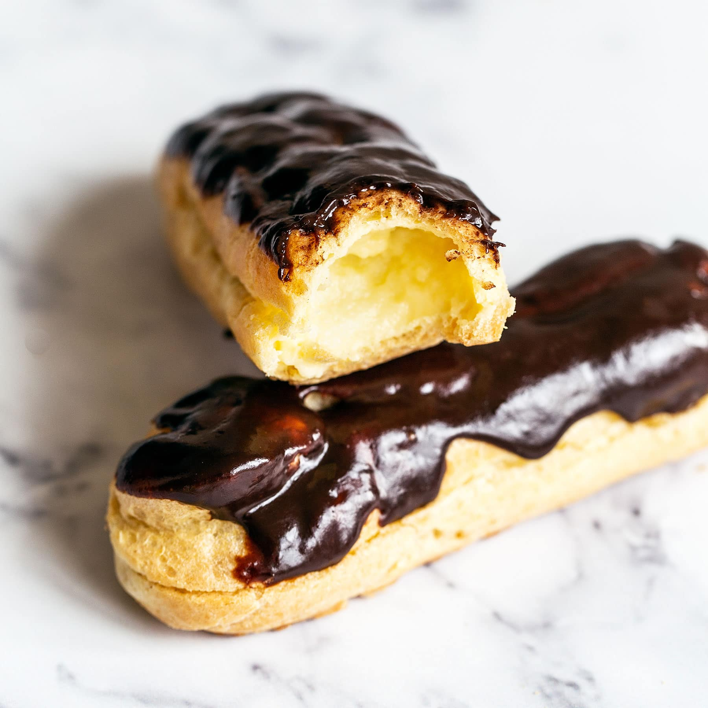

Easy Chocolate Eclairs To Impress Your Friends

These deliciously decadent chocolate eclairs filled with creamy vanilla custard are worth the effort.
Make a batch of these classic French pastries and you'll look like a Chad in the kitchen.
If you don't have the time or can't be arsed, buy them from Waitrose. You toff.
Difficulty: Hard
Time: 45 Minutes prep plus 1 hour cooking time.
Ingredients
For the roux pastry:
- 140g plain flour
- pinch of sugar
- 125ml milk
- 100g butter
- 4 eggs
For the custard filling:
- 300ml milk
- 50g caster sugar
- 2 egg yolks
- 1 tsp vanilla extract
- 4 tsp plain flour
- 4 tsp cornflour
- 375ml double cream
For the icing:
- 100g plain chocolate
- 25g butter
- 1 tbsp icing sugar
Method
-
Start by making the custard filling. Heat the milk until almost boiling in a saucepan.
Meanwhile, mix together the sugar, egg yolks and vanilla in a bowl, then stir in the flours,
a couple of tsp at a time, to a smooth paste.
- Gradually whisk in the hot milk, pour everything back into the saucepan and cook over a high heat,
stirring constantly, for about 5 mins until thick – it will go alarmingly lumpy but don’t worry, just
keep stirring it vigorously with a wooden spoon until smooth
- Lay a sheet of cling film directly on the custard surface, then cool and chill until you’re
ready to fill the buns.
- To make the choux buns, heat the oven to 220C/200C fan/gas 7. Sift the flour with the sugar and
a pinch of salt into a small bowl. Put the milk and butter into a medium saucepan with 125ml water and
gently heat so the butter melts but the liquid doesn’t bubble.
- Once the butter has completely melted, increase the heat until the liquid
comes to a fast rolling boil. Immediately turn off the heat, tip in the sifted
flour and beat vigorously with a wooden spoon until you a have a smooth dough that
comes away from the sides of the pan. Spread over a large dinner plate to cool to hand
temperature.
- Allow to cool for a few minutes, then gradually add the eggs, mixing well between each
addition until the mixture reluctantly drops off the spoon. Don’t add all the egg unless you need to.
- Cut two large sheets of baking parchment. On each one draw two sets of ‘track’ lines with a
10cm gap – these will be your guidelines so your eclairs will all be roughly the same size.
Use the paper to line two large baking sheets – penside down.
- Spoon your choux mixture into a piping bag with a 1cm star or round wide nozzle, or into a
disposable piping bag with a similar-size hole snipped off for piping. Pipe two rows of well-spaced,
squashed ‘S’ shapes on each sheet between the guidelines. Bake, one tray at a time, on a high-ish shelf
for 25 mins, reducing temperature to 200C/180C fan/gas 6 as soon as they go in the oven.
- While the buns are cooling, finish your filling. Whisk the cream until thick, then use your electric
whisk to beat the cooled, set custard until just smooth again. Fold in the cream. Spoon your filling into
a piping bag – use a small nozzle if you’re filling the buns through the holes you've pierced, or a large nozzle
if you’ve split the buns in half. Carefully pipe the custard into each cooled bun – they should feel heavy once full.
- To make the icing, melt 100g plain chocolate and 25g butter together in a heatproof bowl over a pan of barely
simmering water. Once melted, remove from the heat and stir in 75ml double cream and 1 tbsp sifted icing sugar.
Once cooled a little, spread over the tops of the buns and leave to cool.
Return to main page